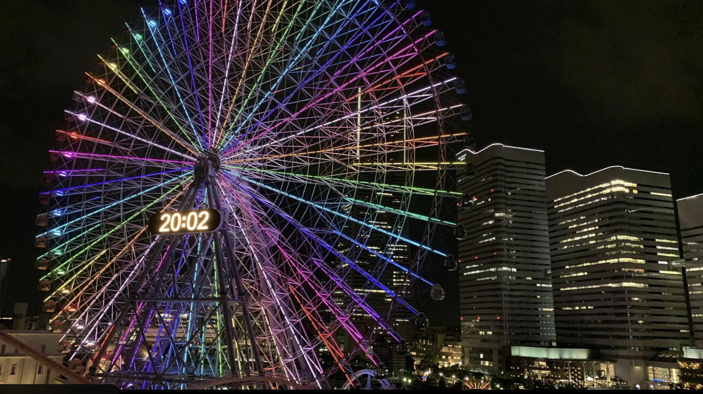
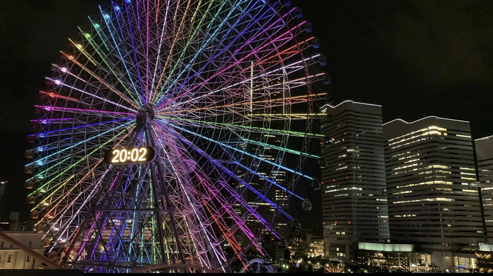

위치 / 접근
요코하마 미나토미라이 21 지역 중심부, JR ‘사쿠라기초역’에서 도보 5분, 미나토미라이선 ‘미나토미라이역’에서도 도보 3분 거리. 랜드마크 타워와 바로 맞닿아 있어 이동이 편리하다.
운영 / 요금 / 시즌 정보
- 운영시간: 평일 11:00~21:00, 주말·공휴일 10:00~22:00 (날씨에 따라 변동)
- 입장료 없음, 각 놀이기구 개별 이용권(약 300~700엔) 구매 방식
- 관람차 ‘코스모 클락 21’ 이용료 약 900엔
- 비 오는 날에도 일부 실내 어트랙션 운영
무엇을 볼 수 있나 / 체험
‘코스모 클락 21’은 지름 100m 규모의 대형 관람차로, 요코하마의 야경을 15분간 천천히 감상할 수 있다. 낮에는 항구와 도시의 조망, 밤에는 조명과 불빛 쇼가 어우러진 환상적인 풍경을 선사한다. 가족 단위의 어린이용 놀이기구부터 스릴 있는 어트랙션까지 다양하게 구성되어 있으며, 도심 속에서 부담 없이 즐길 수 있는 휴식형 테마파크다.
먹거리 / 주변 시설
주변에는 ‘랜드마크 플라자’, ‘퀸즈스퀘어’, ‘레드브릭 창고’ 등 쇼핑·식사 명소가 모여 있다. 놀이공원 내에도 크레페, 아이스크림, 간단한 푸드트럭이 운영되며 관람차 탑승 후에는 인근 카페 거리에서 야경을 감상하며 여유롭게 휴식할 수 있다.
추천 일정 & 여행 스타일
- 낮: 코스모월드 → 인근 쇼핑몰 산책 → 점심 식사
- 저녁: 노을 시간대 관람차 탑승 → 항구 야경 감상 → 레드브릭 창고 이동
- 여행 스타일: 커플, 가족, 야경·사진 중심 여행자에게 추천
문화 / 역사 / 배경
1990년대 미나토미라이 재개발 프로젝트의 일환으로 개장한 도심형 놀이공원이다. 개항도시 요코하마의 현대성과 낭만을 동시에 상징하며, 관람차 ‘코스모 클락 21’은 세계 최초의 대형 시계형 관람차로 알려져 있다. 지역 축제나 불꽃놀이와 함께 방문 시 더욱 화려한 풍경을 즐길 수 있다.
⚠ 여행 팁
- 관람차는 일몰 30분 전~야간이 가장 인기 있는 시간대
- 강풍 시 일부 놀이기구는 운행 중단될 수 있음
- 저녁에는 사진 명소 포인트가 많아 삼각대 지참 추천
- 가족 여행 시 미리 놀이권 세트 구입 시 할인 가능